A2P thumbnails: the final versions
Wed Nov 25. Your picks with close variants: 1 is your pick as it was, 2 is the same pointing only at A2P VERIFIED, 3 is your number four, 4 and 5 are two more takes on it, 6 is the thumbs again. One master face on all of them, no glow outline. Tell me the numbers for the YouTube test (it takes three).
My pick1. Your pick: pointing at both
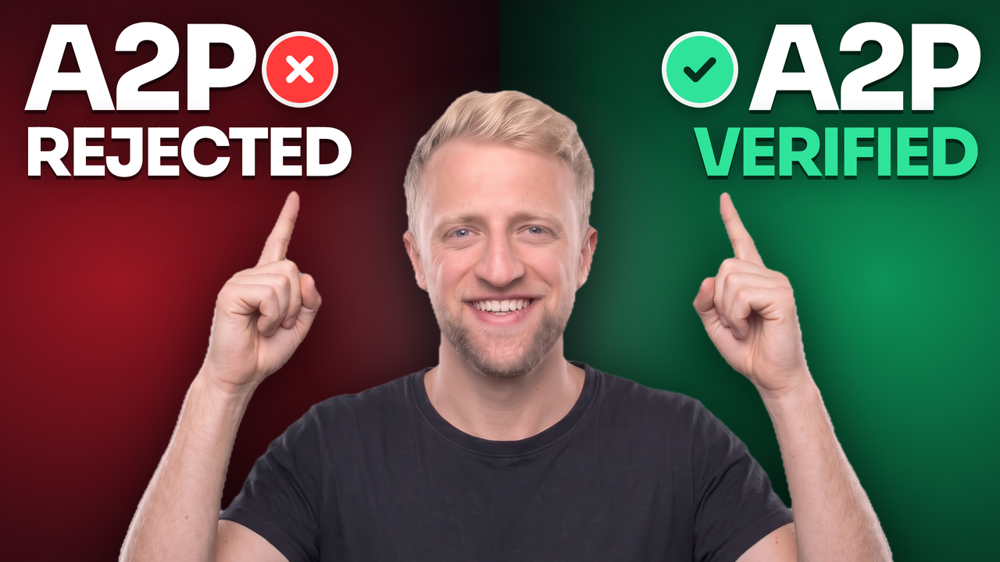

 search size and sidebar size
search size and sidebar sizeA2P REJECTED VERIFIED
Download thumbnail 12. Your pick, pointing only at A2P VERIFIED
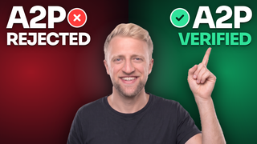
search size and sidebar sizeA2P REJECTED VERIFIED
Download thumbnail 23. A2P on top, pointing up with both hands (your number four)
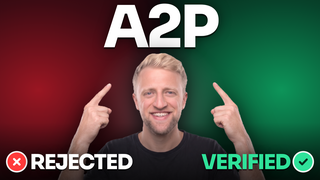
search size and sidebar sizeA2P REJECTED VERIFIED
Download thumbnail 34. A2P on top, one finger up
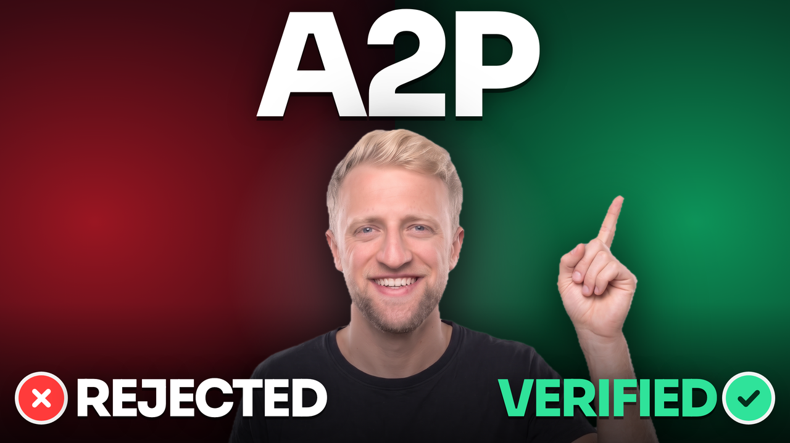
A2P REJECTED VERIFIED
Download thumbnail 45. A2P on top, marks only (fewest words)
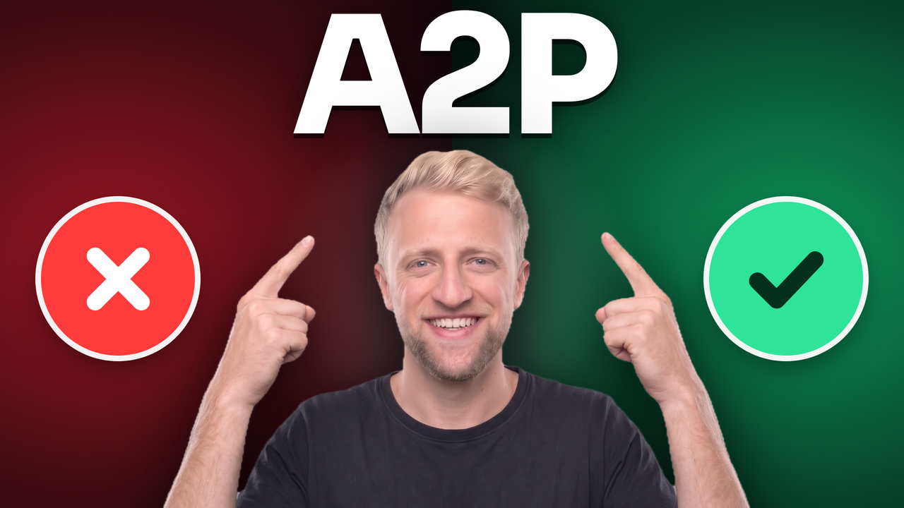
A2P REJECTED VERIFIED
Download thumbnail 56. Thumb down, thumb up (your number three)


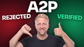
search size and sidebar sizeA2P REJECTED VERIFIED
Download thumbnail 6Next to the videos you compete with
Each of yours at search size, inside a row of the A2P videos that rank today (pulled from YouTube on Tue Nov 24). The title under yours is the current first title pick.

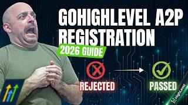
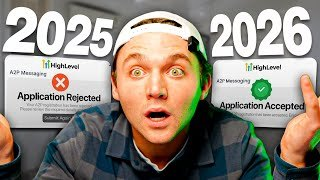
What the top creators do, and what we took
1. MrBeast (his last 40 videos, added to the ledger today). His third best is a before and after: two halves in two colours, him twice, a white arrow, one short label per side. His best 8 all show one story in one picture with 0 to 2 words and a strong feeling on the face. His worst 4 are calm group shots with no tension. Taken into version 2 (two of you).
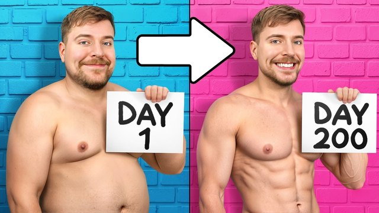

2. Top business creators: a before and an after in one frame is the single best thumbnail of Dan Martell and Ali Abdaal and the third best of Nate Herk. It wins when the two labels are short and concrete; it lost for Ravi Abuvala and Iman Gadzhi with vague labels. Ours: REJECTED and VERIFIED, one word each.
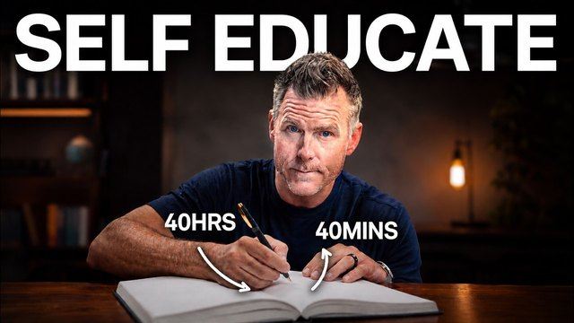


3. Nick Saraev: his best thumbnails put him in the centre with 2 to 4 very large words. All of his 10 best carry 4 words or fewer; 7 of his 10 worst have no words at all. So the keyword has to be large and up where it reads, which is why A2P left your chest.
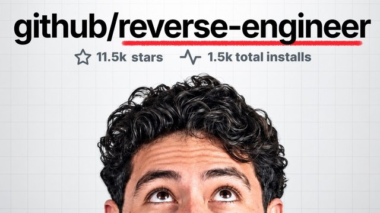

4. One caution on pointing: in 140 hand-checked thumbnails of the top business creators nobody points with a finger; Nate Herk does in 2 (1.9x each), and 6 of 16 thumbnails in the A2P niche do. MrBeast's best 8 do not point either. Pointing is a niche habit, not a top creator habit. Versions 2 and 3 carry your idea without a pointing finger, so the YouTube test can tell us.

Your one face
Every pose above carries this same face, pixel for pixel. A different expression is made from it as an adjustment, never kept as a second face.